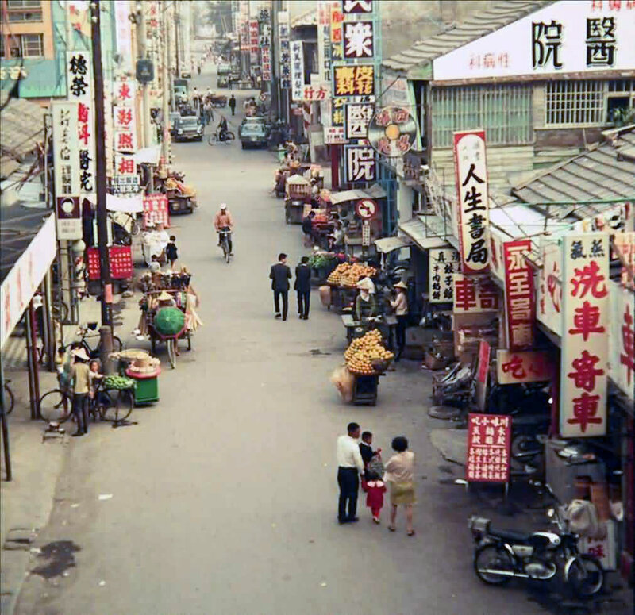
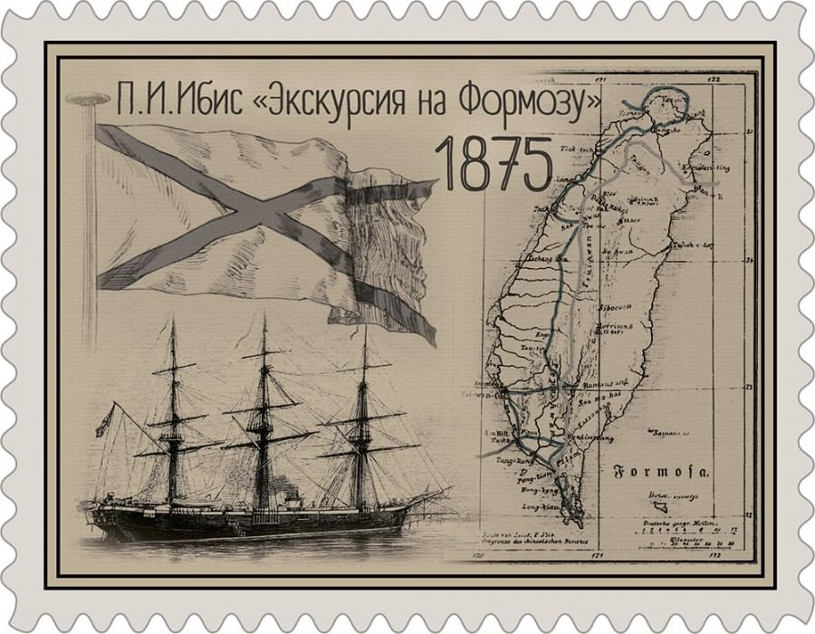
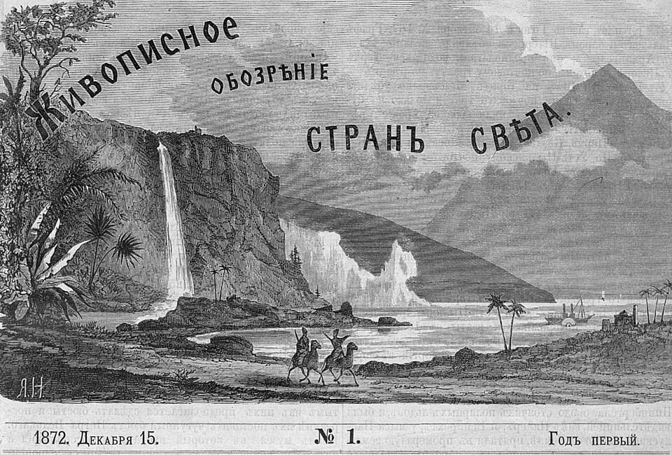

<!DOCTYPE html>
<html lang="en">
<head>
    <meta charset="UTF-8">
    <meta name="viewport" content="width=device-width, initial-scale=1.0">
    <title>Этнографы о Тайване</title>
    <link href="style.css" rel="stylesheet">
</head>
<body>
    
</body>
</html><html>
    <body>
        <main>
            <h1>Этнографы о Тайване</h1>
            <section>
            <p id="sun"><em>Этнографы отправились в Тайвань и решили идти по пути Павла Ивановича Ибиса</em></p>
                
            <p id="pik"><em>Челябинск – Москва – Пекин – Тайбэй. Долгий, тяжелый перелет и вот он – остров,
    о котором у нас мало что известно. 
    Уникальная природа, бесконечное количество рисовых полей,
    странная архитектура и приветливые островитяне. 
    Мы прилетели в Тайбэй, добрались на высокоскоростном поезде до города Гаосюн, 
    откуда начали свое продвижение по заранее спланированному маршруту.
    Павел Ибис, согласно его записям, именно из Гаосюна отправился в свой поход.(Сергей Малков)</em></p>
    
    <p id="sun"  ><em>Что сразу бросилось вам в глаза по приезду на остров?
            Сергей Малков: Пока мы ехали со скоростью под 300 км в час
            на электропоезде до Гаосюна, на глаза нам попадалось множество рисовых полей. 
            Дороги, поля, промышленные сооружения, пруды для разведения рыбы – обычное дело на Тайване.
            А что насчет культурных ценностей тайваньцев?
            Федор Лабутин: Дело в том, что первую половину 20 века Тайвань входил 
            в состав японской империи. Все ценности местного народа заменялись 
            традиционным японским укладом жизни. За это время многие традиции 
            китайцев и языческие традиции аборигенов были забыты.</em></p>
            <figure class="kartinki">
            
            
            </figure>
            <h3 id="ry"><em>Если вы хотите узнать больше о острове Тайвань приходите к нам в музей.</em></h2>
            <h3><em>Наш номер:8-(977)-220-34-55</em></h3>
            <h3><em>Рабочие дни:</em></h3>
            <ol>
                <li>Понедельник-выходной</li>
                <li>Вторник с 8:00 до 22:00</li>
                <li>Среда с 8:00 до 22:00</li>
                <li>Четверг с 8:00 до 22:00</li>
                <li>Пятница с 8:00 до 22:00</li>
                <li>Субботас 8:00 до 22:00</li>
                <li>Воскресенье с 8:00 до 22:00</li>
            </ol>
            </section>
        </main>
    </body>
</html>